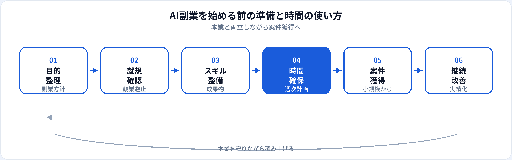

AIスキルを活かした副業・業務委託は、本業を続けながら実績を積み、のちに転職やフリーランスへつなげる入口になります。一方で、就業規則違反や品質トラブル、本業のパフォーマンス低下といったリスクもあります。本記事では、案件獲得の前に整えるべき就規・競業避止の確認、スキルとポートフォリオ、時間の使い方、始めやすい案件の種類を2026年6月時点で整理します。
AI副業とは何を指すか
本記事での「AI副業」は、生成AIツールの活用支援から、データ分析・機械学習の受託開発まで、AI関連スキルを使って本業以外で収入を得る活動を指します。形態は、クラウドソーシングのスポット案件、知人紹介の業務委託、週1日の準委任契約など多様です。
フリーランスとして独立する前段階として副業を始める人も多く、小さく始めて実績と信頼を積むのが一般的なルートです。単価や案件の探し方はAIフリーランスの単価と案件の現実で整理しています。本記事では始める前の準備に焦点を当てます。
始める前に確認すること
スキルより先に、法的・社内ルールの確認を済ませてください。後から問題になるパターンが最も避けたい失敗です。
| 確認項目 | なぜ重要か | アクション |
|---|---|---|
| 就業規則・副業規定 | 届出義務・事前承認・禁止業種がある | 就規を読み、必要なら人事に相談・届出 |
| 競業避止・兼業禁止 | 同業・類似業務が制限されることがある | クライアント業種と業務内容の重複を確認 |
| 機密・知的財産 | 本業のデータ・ノウハウの流用はNGになりやすい | 副業用の環境・アカウントを分離する |
| 税・社会保険 | 副業収入は確定申告の対象 | 収入見込みを把握し、税理士相談も検討 |
注意
当サイトは法律・税務の助言を提供しません。会社ごとの規定や個人の状況は異なるため、不明点は専門家または社内窓口に確認してください。
案件獲得前に整えるスキル
案件獲得前に、説明できる成果物を1つ用意しておくと交渉がスムーズです。詳細はAI職向けポートフォリオの作り方を参照してください。
時間の使い方（本業との両立）
本業のパフォーマンスを落とさないことが、副業を継続する前提です。最初の3か月は次の配分が目安になります。
| 週あたり | 用途 | 内容例 |
|---|---|---|
| 3〜5時間 | 学習・スキル維持 | 資格復習、ツール試行、小さな個人課題 |
| 2〜4時間 | 案件獲得準備 | プロフィール整備、提案文テンプレ、ポートフォリオ更新 |
| 0〜5時間 | 案件遂行 | 受注後に増やす。最初は小さな案件から |
合計週5〜10時間から始め、本業に支障が出ない範囲で徐々に増やすのがおすすめです。平日夜＋週末半日など、固定の副業タイムをカレンダーにブロックしておくと継続しやすくなります。
準備の流れ

-
目的を言語化する（1週間）
「月5万円の副収入」「1年後にAI職へ転職」など、副業のゴールを1文で書く。
-
就規・届出を完了する
承認が下りるまで案件応募を控える。グレーなら専門家に相談。
-
代表作を1つ仕上げる（2〜4週間）
応募職種・案件タイプに近い題材で、README付き成果物を公開。
-
小規模案件で実績を作る
初回は単価より納期遵守とレビュー対応で信頼を取る。
始めやすい副業の種類
未経験に近い状態から始めやすい順の目安です。スキルが上がるにつれ、開発・MLOps系へ広げられます。
| 種類 | 内容例 | 求められやすいスキル | 関連ガイド |
|---|---|---|---|
| 生成AI活用支援 | プロンプト設計、業務テンプレ整備、研修補助 | 生成AIパスポート水準、リスク理解 | プロンプトエンジニア |
| データ整理・レポート | 集計、ダッシュボード、定期レポート代行 | SQL、スプレッドシート/BI | データアナリスト |
| 分析・予測の受託 | 小規模予測モデル、EDAレポート | Python、評価指標の説明 | AIエンジニア |
| LLMアプリのPoC | チャットボット、簡易RAGの試作 | API連携、ガードレール設計 | 生成AIエンジニア |
本業への悪影響を避けるコツ
| 避けたいこと | 対策 |
|---|---|
| 本業の残業後に毎日副業で疲弊 | 週の上限時間を決め、案件数を絞る |
| 会社のデータ・ツールを副業に流用 | 個人用アカウント・環境を分離 |
| 納期に間に合わず評判を落とす | 初回は余裕のある納期の案件のみ受ける |
| スキル不足で品質トラブル | 受けられる範囲を明言し、無理な案件は断る |
副業からキャリアアップへ
副業は次のような出口に使えます。
-
正社員のAI職へ転職
副業実績を職務経歴書に載せ、ポートフォリオと合わせて面接で説明。守秘の範囲内で数値成果を用意する。
-
本業内のAI推進へ
副業で得たノウハウを社内プロジェクトに還元（就規の範囲内）。社内評価アップにつながることも。
-
フリーランス・独立
継続案件と紹介が安定してから検討。単価相場と案件の現実もあわせて読んでください。
職種選びの全体像は未経験者向けAI職種5つ、学習順序は学習ロードマップも参照してください。
よくある質問
AI副業は未経験から始められる？
可能です。最初は小規模なデータ整理や生成AI活用支援から始め、ポートフォリオで信頼を補強するのが現実的です。
副業は会社に報告が必要？
就業規則によります。副業届・事前承認が必要な会社も多いため、不明な場合は人事に確認してから始めてください。
週にどのくらい時間を確保すべき？
本業への影響を避けるなら、最初は週5〜10時間が目安です。学習・案件準備と遂行のバランスを取ってください。
副業から本業のAI職へ移れる？
小規模案件で成果物を作り、正社員転職に活かすパターンはあります。守秘義務の範囲内で成果を説明できるようにしておくとよいです。
クラウドソーシングから始めてよい？
入口として有効です。ただし単価が低い案件も多いため、実績作りの場と割り切り、スキルが上がったら単価交渉や紹介案件へ移行するのが一般的です。